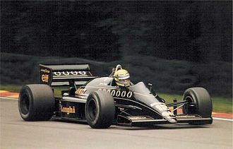
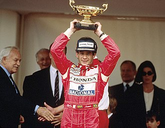

-
FORMULA ONE CAREER
-
Toleman (1984)
-
1983–1984: Testing and debut season
-
In 1983, Senna tested for Formula One teams Williams, McLaren, Brabham, and Toleman. Peter Warr of
Lotus, Ron Dennis of McLaren, and Bernie Ecclestone of Brabham made offers for testing in 1984 and
presented long-term contracts that tied Senna to driving later on. During his test for Williams at
the 3.149-km (1.957-mi) Donington Park circuit, Senna completed 40 laps and was quicker than the
other drivers, including Williams's reigning World Champion Keke Rosberg. Neither Williams nor
McLaren had a vacancy for the 1984 season.
Both Williams boss Frank Williams and McLaren boss Ron Dennis observed that Senna insisted that he
got to run their cars before anyone else (other than their regular drivers such as Rosberg) so that
he would have the best chance of a good showing by having a fresh car. Peter Warr actually wanted to
replace Nigel Mansell with Senna at Lotus, but their British-based title sponsor, Imperial Tobacco
(John Player & Sons), wanted a British driver. Senna was determined to drive that season and
certainly on his own terms. Senna's test for Brabham occurred at Circuit Paul Ricard in November
1983. Senna impressed the Brabham team and was linked to their second seat. The team's main sponsor,
Italian dairy company Parmalat, wanted an Italian driver. Brabham's second car was eventually shared
by brothers Teo and Corrado Fabi, while Piquet convinced Ecclestone to sign his friend Roberto
Moreno as the test driver. Consequently, Senna joined Toleman, a relatively new team, using less
competitive Pirelli tyres. Venezuelan Johnny Cecotto, a former Grand Prix motorcycle racing world
champion, was his teammate.
In 1984, Senna hired Nuno Cobra to assess his physical condition due to his concern over his low
weight. Senna made his debut at the Brazilian Grand Prix in Rio de Janeiro, where he qualified 17th
but retired when the Hart 415T turbocharger failed on lap 8. He scored his first World Championship
point when he finished sixth in his second race at the South African Grand Prix at Kyalami with
severe cramp in his neck and shoulders, and replicated that result two weeks later at the Belgian
Grand Prix. A combination of tyre issues and a fuel-pressure problem resulted in his failure to
qualify for the San Marino Grand Prix, the only time this happened during his career. Toleman
decided not to run both cars during Friday qualifying at Imola due to a dispute with tyre supplier
Pirelli (Toleman were in the process of switching from Pirelli to Michelin). Senna then suffered a
fuel-pressure problem in the wet Saturday session at Tosa (the furthest point on the circuit from
the pits) and did not have enough time for it to be fixed to allow him to make the grid. Senna's
best result of the season came at the Monaco Grand Prix, the first wet-weather race of the season.
Qualifying 13th on the grid, he made steady progress in climbing through the field, passing Niki
Lauda for second on lap 19. He quickly began to cut the gap to race leader Alain Prost. Before he
could attack Prost, the race was stopped on lap 31 for safety reasons, as the rain had grown even
heavier. At the time the race was stopped, Senna was catching Prost by about 4 seconds per lap
(while the Tyrrell-Ford of Stefan Bellof was catching both at the same rate, although he was later
disqualified due to weight restrictions broken by Tyrrell).
Senna was renowned throughout his career for his capacity to provide very specific technical details
about the performance of his cars and track conditions long before the advent of telemetry; this
skill led Pat Symonds, Senna's first Formula One race engineer, to regard the Dallas Grand Prix in
the United States as the initial highlight of Senna's debut season, instead of Monaco. In an
interview, Symonds recalled:
"The car was reasonably competitive there, so we expected to have a good race, but Ayrton spun
early in the race. He then found his way back through the field in a quite effective way and we
were looking for a pretty good finish, but then he hit the wall, damaged the rear wheel and the
driveshaft and retired, which was a real shame. The real significance of that was that when he
came back to the pits he told me what happened and said "I'm sure that the wall moved!" And even
though I've heard every excuse every driver has ever made, I certainly hadn't heard of that one!
But Ayrton being Ayrton, with his incredible belief in himself, the absolute conviction, he then
talked me into going with him after the race to have a look at the place where he had crashed.
And he was absolutely right, which was the amazing thing! Dallas being a street circuit, the
track was surrounded by concrete blocks and what had happened – we could see it from the tyre
marks – was that someone had hit at the far end of the concrete block and that made it swivel
slightly, so that the leading edge of the block was standing out by a few millimetres. And he
was driving with such precision that those few millimetres were the difference between hitting
the wall and not hitting the wall. While I had been, at first, annoyed that we had retired from
the race through a driver error, when I saw what had happened, when I saw how he had been
driving, that increased my respect for the guy by quite a lot."
That season, Senna took two more podium finishes—third at the British and Portuguese Grands Prix—and
placed 9th in the Drivers' Championship with 13 points overall. He did not take part in the Italian
Grand Prix after he was suspended by Toleman for being in breach of his contract by entering talks
with Lotus for 1985 without informing the Toleman team first. Although Senna did have a £100,000
buyout clause in his contract, the team had to be informed before discussions with another team
started. Senna became the first driver Lotus had signed not personally chosen by team founder Colin
Chapman, who had died in 1982. At the end of the year, Senna had developed Bell's palsy, possibly
from a virus. One side of his face had become completely paralysed; Sid Watkins gave Senna steroids
to preserve the possibility of recovery.
-
-
Senna's Toleman TG184 from 1984 on display in the Donington Grand Prix Collection
-
Lotus (1985–1987)
-
1985: First pole positions and wins
-
Senna was partnered in his first year at Lotus-Renault by Italian driver Elio de Angelis. He had
dominated testing times at Rio, although he retired with electrical issues during the race weekend.
Although the Renault-powered Lotus 97T was quick and nimble, particularly on tight and bumpy
circuits and perhaps had the best suspension of any car that year, the car was unreliable and Senna
made a few mistakes out of inexperience. At the second round of the season, the Portuguese Grand
Prix, Senna took the first pole position of his Formula 1 career. He converted it into his first
victory in the race, which was held in very wet conditions, winning by over a minute from the
Ferrari of Michele Alboreto, and lapping everyone up to and including third placed Patrick Tambay.
The race was the first Grand Slam of Senna's career, as he also set the fastest lap of the race. He
later argued it was the best drive of his career, an opinion shared by race engineer Steve Hallam,
who recognised Senna's "truly special" talent.
Senna led at the San Marino, Monaco, British and German Grands Prix but retired from all these races
either from engine failure or running out of fuel, and he had a huge accident at the French Grand
Prix at the Circuit Paul Ricard's fastest corner after an engine failure in the middle of the
corner. He did not finish in the points again until coming second at the Austrian Grand Prix,
despite taking pole three more times in the intervening period. His determination to take pole at
the Monaco Grand Prix had infuriated Alboreto and Niki Lauda; Senna had set a fast time early and
was accused of deliberately baulking the other drivers by running more laps than necessary, a charge
he rejected, although the accusations continued in Canada when drivers accused him of running on the
racing line when on his slow down lap forcing others on qualifiers to move off line and lose time.
Two more podiums followed in the Netherlands and Italy, before Senna added his second victory in
wet-dry conditions, at the Circuit de Spa-Francorchamps in Belgium. Senna's relationship with De
Angelis soured over the season, as both drivers demanded top driver status within Lotus and, after
spending six years at the team, De Angelis departed for Brabham at the end of the year, convinced
that Lotus were becoming focused around the Brazilian driver. Senna and De Angelis finished the
season 4th and 5th respectively in the driver rankings, separated by five points. In terms of
qualifying, Senna had begun to establish himself as the quickest in the field; his tally of seven
poles that season was far more than that of any of the other drivers. Renault's V6 qualifying
engines were reported to be producing over 1,000 bhp (746 kW; 1,014 PS).
-
-
Senna driving the Lotus 97T at the 1985 European Grand Prix
-
1986: Eight pole positions and eight podiums
-
De Angelis was replaced at Lotus by Scotland's Johnny Dumfries after Senna vetoed Derek Warwick from
joining the team, saying that Lotus could not run competitive cars for two top drivers at the same
time. Senna allegedly pushed for his former flatmate and fellow Brazilian Maurício Gugelmin to join
the team as a pure number two driver, but the team's major sponsor John Player & Sons (JPS) insisted
on a British driver, which led to the signing of Dumfries. Senna later admitted "It was bad, bad.
Until then I had a good relationship with Derek." Senna started the season well, coming second in
Brazil behind the Williams-Honda of fellow countryman Nelson Piquet, and winning the Spanish Grand
Prix by just 0.014s from Piquet's teammate Nigel Mansell in one of the closest finishes in Formula
One history to find himself leading the World Championship after two races. Although the 98T was
like the 97T which came before it, a quick car with superiority on tight, bumpy circuits but plagued
with poor reliability, particularly in the second half of the season it saw him drift behind the
Williams pairing of Mansell and Piquet, as well as defending and eventual champion Alain Prost.
Nonetheless, Senna was once more the top qualifier with eight poles, with a further six podium
finishes included another win at the Detroit Grand Prix, thus finishing the season fourth in the
driver's standings again, with a total of 55 points. The 1986 Formula One cars were the most
powerful cars in history, with Senna's 98T producing over 1,300 bhp (969 kW; 1,318 PS) in qualifying
and 850 bhp (634 kW; 862 PS) in the race.
After winning the Detroit Grand Prix from Frenchmen Prost and Jacques Laffite — which took place
one day after Brazil was eliminated from the 1986 FIFA World Cup by France — Senna asked a
trackside supporter for the Brazilian flag and he drove one lap waving it. Thereafter, he repeated
this ritual every time he won a race. During an interview on American television, he used English
curse words to express his frustration at having to go into the pits earlier than expected due to a
deflating rear tire. Senna also had a brief foray into rallying when he was invited by British
magazine Cars & Car Conversions to try out a Vauxhall Nova, an MG Metro 6R4, a Ford Sierra RS
Cosworth and a Ford Escort on a stretch of land closed to the public.
-

-
Senna driving the Lotus 98T at the 1986 British Grand Prix
-
1987: Last season at Lotus
-
Team Lotus had a new engine deal in 1987, running the same turbocharged Honda V6 engines as Williams
had used to win the previous year's Constructors' Championship, and with them came a new teammate,
34-year-old Japanese driver, Satoru Nakajima, who was a test driver employed directly by Honda. The
team guaranteed Senna contractually preferential treatment over Nakajima in the allocation of
equipment. Senna started the season with mixed fortunes: a podium at the San Marino Grand Prix was
tempered by controversy at the following race at Spa-Francorchamps, where he collided with Mansell,
and afterward in the pits an irate Mansell grabbed Senna by the throat and had to be restrained by
Lotus mechanics. Senna then won two races in a row, which helped him take the lead in the World
Championship: the ensuing Monaco Grand Prix (the first of his record six victories at the
Principality) and the Detroit Grand Prix, his second victory in two years at the angular Michigan
street circuit, and the first ever for an active suspension Formula One car.
As the championship progressed, it became evident that the Williams cars had the advantage over the
rest of the field, the gap between the Honda-engined teams made most obvious at the British Grand
Prix, where Mansell and Piquet in the superior Williams cars lapped the Lotuses of Senna and
Nakajima who finished 3rd and 4th respectively. Senna became dissatisfied with his chances at Lotus
and at Monza it was announced that he would be joining McLaren for 1988. Senna was fined $15,000 for
punching a corner marshal after they refused to push his stalled car in Mexico then finished the
season strongly, coming second in the final two races in Japan and Australia; post-race
scrutineering at the final race found the brake ducts of his Lotus to be wider than permitted by the
rules and he was disqualified, bringing his last and most successful season with Lotus to a sour
end. Senna was classified third in the final standings, with 57 points, six podium finishes and only
one pole position. This season marked a turning point in Senna's career as, throughout the year, he
built a deep relationship with Honda, which paid big dividends, as McLaren had secured Williams's
supply of Honda's V6 turbo engines for 1988.
-
-
The Lotus 99T raced by Senna in 1987
-
McLaren (1988–1993)
-
1988: First world championship
-
In 1988, due to the relationship he had built up with Honda throughout the 1987 season with Lotus,
and with the approval of McLaren's number-one driver and then-double world champion, Alain Prost,
Senna joined the McLaren team. The foundation for a fierce competition between Senna and Prost was
laid, culminating in a number of dramatic race incidents between the two over the next five years.
The experienced pair also quickly realized, despite their personal rivalry, they had to work
together, especially in testing, to keep ahead of their main opposition from Ferrari, Williams,
Benetton, and Lotus.
One notable incident of the year was at the Monaco Grand Prix, where Senna out-qualified Prost by 1.4
seconds and led for most of the race before crashing on lap 67. Instead of returning to the pit
lane, Senna was so distressed by his mistake that he went back to his apartment and did not contact
the team until he walked into the pit garage as they were packing up later that night. After team
manager Jo Ramirez called him through his Monaco apartment's cleaner hours after he had crashed,
Senna was still devastated by his own mistake. As the television cameras had not captured his crash,
team boss Ron Dennis did not know what had caused his DNF until then, although Prost speculated that
judging from the tyre marks, it appeared as though Senna had clipped the inside barrier at Portier,
which pitched him into the outside guard rail.
At the Portuguese Grand Prix, Prost made a slightly faster start than Senna who, as he would a number
of times, dived into the fast first corner ahead. Prost responded and went to pass Senna at the end
of the first lap. Senna swerved to block Prost, forcing the Frenchman to nearly run into the pit
wall at 290 km/h (180 mph). Prost kept his foot down and soon edged Senna into the first corner and
started pulling away. Prost, normally a calm individual, was angered by Senna's manoeuvre, and the
Brazilian got away with a warning from the FIA. At the post-race team debrief, Prost voiced his
anger at the move which prompted Senna to apologize to Prost for the incident.
Ultimately, the pair won 15 of 16 races in the dominant McLaren MP4/4 in 1988 with Senna coming out
on top, winning his first Formula One world championship title by taking eight wins to Prost's
seven. Although Prost scored more points over the season, three of his second places were dropped,
as only the eleven-best scores counted, meaning that Senna bested Prost by three points. During the
season, Senna rewrote the record books. His eight wins beat the old record of seven jointly held by
Jim Clark (1963) and Prost (1984). His 13 pole positions also beat the record of nine held by Nelson
Piquet (1984).
The biggest incident of the year happened at the Italian Grand Prix at Monza. With two laps
remaining, Senna held a five-second lead over the Ferraris of Gerhard Berger and Michele Alboreto,
who were closing in on the McLaren MP4/4 (Prost had earlier retired with a badly misfiring engine).
Going into the Rettifilo chicane, Senna closed on the Williams FW12 of Jean-Louis Schlesser
(standing in for the unwell Nigel Mansell). Schlesser steered wide, attempting to give Senna room to
lap him, losing then regaining control to avoid going into the sand trap, and the two collided;
Senna's car was beached on top of a curb and had stalled. Ferrari went on to finish 1–2, the first
in an Italian Grand Prix since the death of the team's founder Enzo Ferrari. This proved to be the
only race McLaren did not win in 1988.
-
-
Senna won his first world title in 1988 driving that season's dominant McLaren MP4/4
-
-
Alain Prost and Senna at the 1988 Canadian Grand Prix. The race was won by Senna
-
1989: Runner-up to Alain Prost
-
In 1989, the rivalry between Senna and Prost intensified into numerous battles on the track and a
psychological war off it. Some controversy also arose after the French GP press conference when Ron
Dennis declared that they found consistent differences between the Honda engines from Prost and
Senna, to the detriment of Prost. Tension and mistrust between the two drivers increased when Senna
overtook Prost at the restart of the San Marino Grand Prix, a move which Prost claimed violated a
pre-race agreement (Senna denied the existence of any agreement, although Prost's story was backed
up by John Hogan of the team's major sponsor, Marlboro). A discussion between the two drivers and
Dennis during a test session at the Pembrey circuit in Wales served to effectively confirm Senna and
Prost's personal animosity to Dennis and the team.
Senna took an early lead in the championship with victories in San Marino, Monaco, and Mexico. Senna
also led every lap of those races, a feat unequalled until Sebastian Vettel replicated it in 2012.
Senna also managed to win in Germany, Belgium, and Spain. Unreliability in four consecutive races in
Phoenix, Canada, France, and Britain, and further unreliability in Italy, together with collisions
in Brazil and Portugal, swung the title in Prost's favour.
Prost took the 1989 world title after a collision with Senna at the Suzuka Circuit in Japan, the
penultimate race of the season which Senna needed to win to remain in contention for the title.
Prost had managed to leave the grid faster than Senna by removing the gurney flap from his car,
which was unbeknownst to Senna. This reduction in aerodynamic downforce made Prost's car faster on
the straights, but slower through corners—a clever choice to make it even harder for Senna to pass
on a circuit already difficult on which to pass. On lap 46, Senna had finally come next to Prost and
attempted a pass on the inside at the tight last chicane. Prost turned right into the upcoming
corner, cutting Senna off and tangling wheels with him. The collision caused both McLarens to slide
to a standstill into the escape road ahead. Prost abandoned the race at that point, whereas Senna
urged marshals for a push-start, which he received, then proceeding with the race after a pit stop
to replace the damaged nose on his car. He took the lead from the Benetton of Alessandro Nannini and
went on to claim victory, only to be disqualified following a stewards meeting after the race. Senna
was disqualified for cutting the chicane after the collision with Prost, and for crossing into the
pit lane entry which was not part of the track.
A large fine and temporary suspension of his FIA Super License followed in the winter of 1989, and
an irate Senna engaged in public criticism of the FIA and its then-president, Jean-Marie Balestre,
whom he blamed for his disqualification in Japan. Senna claimed that Balestre had forced the race
stewards to disqualify him so his fellow Frenchman Prost could win the championship, though the
stewards of the meeting denied that Balestre forced their decision, claiming that he was not present
when the decision was made. Senna finished the season second with six wins and one second place.
Prost, who could not stand working with Senna in what he felt was a hostile environment, left
McLaren for rivals Ferrari the following year. Prost had burned bridges even with Ron Dennis after a
trophy-related incident in Italy.
-
-
Senna driving the McLaren MP4/5 in 1989
-
1990: Second world championship
-
In 1990, Senna took a commanding lead in the championship with six wins, two second-places, and
three thirds. With Prost gone to Ferrari, he also had a new teammate in Austrian driver and friend
Gerhard Berger. Among his victories were the opening round on the wide streets of Phoenix, in which
he diced for the lead for several laps with Jean Alesi's Tyrrell before coming out on top, and in
Germany, where he fought Benetton driver Alessandro Nannini throughout the race for the win. Senna
won six races, including another Monaco win.
As the season reached its final quarter, Prost in his Ferrari rose to the challenge with five wins,
including a crucial victory in Spain where he and teammate Nigel Mansell finished 1–2 for the
Scuderia. Senna had gone out with a damaged radiator, and the gap between Senna and Prost was now
reduced to nine points with two races left.
At the penultimate round of the championship in Japan, where Senna and Prost collided the previous
year, Senna took pole ahead of Prost. Before qualifying, Senna had sought assurances from the
organisers to move pole position left onto the clean side of the racetrack. After qualifying, FIA
president Balestre denied Senna's request, leaving Senna to start on the dirty right side, thus
favouring Prost on the left. In addition, as revealed by Formula One journalist Maurice Hamilton,
FIA had warned that crossing the yellow line of the pit exit on the right to better position oneself
at the first corner would not have been appropriate, further infuriating Senna. At the beginning of
the race, Prost pulled ahead of Senna, who immediately tried to repass Prost at the first corner.
While Prost turned in, Senna kept his foot on the accelerator and the cars collided at 270 km/h (170
mph) and went off the track, went through the gravel trap and slammed into the tire barrier, making
Senna world champion. Senna stated it was not how he wanted it but how it had to be.
Following the second championship-deciding collision in two years, Prost went on record criticising
Senna's actions as "disgusting", saying that he seriously considered retiring from the sport after
that incident. During an interview with Eurosport at the Australian Grand Prix, Prost revealed that
he had seen the Honda engine telemetry at Suzuka and that it showed that Senna had kept his foot
absolutely flat through the 4th gear corner when he had hit Prost-Senna had not even taken his foot
off the accelerator to change down to 4th for this corner, strongly intimating that Senna had taken
Prost out on purpose. Jackie Stewart interviewed Senna at the subsequent race in Australia (where
Senna won pole and led for 61 laps before gearbox trouble forced him to slide off into a tyre
barrier) and brought up a number of controversial collisions in which Senna had been involved over
the last few years, stating that Senna had made more contact with other cars and drivers in the last
four years than all the champions before him. Feigning irritation, Senna questioned how someone like
Stewart, himself a triple world champion, could ask questions like he did, knowing the pressure
under which drivers raced and famously said: "Being a racing driver means you are racing with other
people, and if you no longer go for a gap that exists, you are no longer a racing driver."
A year later, after taking his third world championship, Senna admitted that he had deliberately
crashed into Prost at the previous year's Japanese Grand Prix, and he then explained to the press
his actions and motives at Suzuka that year, saying that it was a payback for 1989. He maintained
that prior to qualifying fastest, he had sought and received assurances from race officials that
pole position would be changed to the left, clean side of the track (where the racing line was),
only to find this decision reversed after he had taken pole. Senna said that he was not going to
accept what he saw as unfair decision-making by the FIA, including his 1989 disqualification and the
incorrect pole position in 1990. Senna stated that no matter what happened, he would not yield the
corner and that Prost taking his normal racing line would result in an accident.
-
-
The McLaren MP4/5B raced by Senna in 1990. With it, he won his second world
championship
-
1991: Youngest back-to-back and three-time world champion
-
In 1991, Senna became the youngest ever three-time world champion, taking seven wins and increasing
his pole position record to 60 from 127 events. Prost, because of the downturn in performance at
Ferrari, the likes of which littered the team's history, was no longer a serious competitor.
In preseason testing, Senna made public misgivings about the car's competitiveness with the new
Honda V12, stating that the engine was not as powerful as the prior year's V10. Even so, Senna won
the first four races in Phoenix, Brazil, Imola, and Monaco as his rivals struggled to match his pace
and reliability. However, by midseason, Nigel Mansell (who only scored six points by the time Senna
had 40 points) was able to put up a challenge in the Adrian Newey designed Williams-Renault.
1991 was a difficult season for Senna.
Before the Mexican Grand Prix, Senna was injured in a jet-skiing accident near São Paulo for which
he required stitches on the back of his head. During qualifying for that Grand Prix, he attempted to
take the banked 180-degree Peraltada corner (Mexico City circuit's fastest corner) faster than
normal, ending up spinning off the track and rolling over the car after crashing into a tyre
barrier.
At the British Grand Prix at Silverstone, Senna's car had come to a halt on the final lap, but he
was not left stranded out on the circuit, as race-winner Mansell pulled over on his parade lap and
allowed the Brazilian to ride on the Williams side-pod back to the pits.
Senna then had an enormous accident during testing at the very fast Hockenheim circuit in Germany
where his car flew 15 feet into the air after a tyre failure, and turned over several times upon
coming down onto the track. The car was destroyed and Senna had to spend the night in hospital in
nearby Mannheim. While still able to compete in the German Grand Prix soon thereafter, at that event
Senna ran out of fuel mere laps before the end.
At the Spanish Grand Prix, Senna and Mansell went wheel-to-wheel with only centimetres to spare, at
over 320 km/h (200 mph) down the main straight, a race which the Briton eventually won.
Though Senna's consistency, the car's competitiveness, and the Williams' unreliability at the
beginning of the season gave him an early advantage, Senna insisted that Honda step up their engine
development program and demanded further improvements to the MP4/6 before it was too late. These
modifications, including modifications introduced at Hungary and variable inlet trumpets introduced
at Belgium enabled him to make a late-season push, and he won three more races to secure the
championship, which was settled in Japan when Mansell (who needed to win), went off at the first
corner while running third and beached his Williams in the gravel trap. Senna finished second,
handing the victory to teammate Gerhard Berger at the last corner as a thank-you gesture for his
support over the season.
Senna was planning to move to the Williams team for the 1992 season, but Honda's CEO, Nobuhiko
Kawamoto, personally requested that he remain at McLaren-Honda, which Senna did out of a sense of
loyalty; in addition to Alain Prost's recommendation, Honda had played an important part in bringing
Senna with them to McLaren.
That year, as had been the case in 1988 and 1990, Senna won the International Racing Driver Award"
granted by British magazine Autosport annually. The award was presented by Stirling Moss and Senna
was interviewed on stage by Formula 1 commentator Murray Walker. During the interview, Senna
confirmed that at the Fédération Internationale du Sport Automobile (FISA) gala dinner in Paris the
day before, under the auspices of Jackie Stewart, Senna had given one of his helmets to his renowned
foe, Jean-Marie Balestre, because of the sincere atmosphere that presented itself and as an
insulting psychological gesture.
-
-
Senna won the 1991 season-opening United States Grand Prix with the new Honda V12-powered
McLaren MP4/6
-
1992: Unsuccessful challenge to the Williams
-
In 1992, Senna's determination to win manifested itself in dismay at McLaren's inability to
challenge Williams's all-conquering FW14B car. The FW14B, thanks in part to its
aerodynamic-enhancing active suspension and powerful Renault V10 engine was much faster and
efficient than any other car that season. McLaren's new car for the season had several shortcomings.
A delay occurred in getting the new MP4/7A model running (it was McLaren's first car with a
semi-automatic gearbox and it debuted in the third race of the season, the Brazilian Grand Prix) and
in addition to lacking active suspension, the new car suffered from reliability issues and was
unpredictable in fast corners, while its Honda V12 engine was no longer the most powerful on the
circuit. Even so, Senna scored wins in Monaco, Hungary, and Italy that year. Senna finished fourth
overall in the championship, behind the Williams duo of Mansell and Riccardo Patrese, and Benetton's
Michael Schumacher.
Senna grew increasingly worried about driver safety during the season. During practice for the
second race of the season in Mexico on a badly maintained and extremely bumpy circuit Senna and
other drivers were heavily critical of, his car hit a bump at one of the circuit's Esses corners
that caused a loss of downforce and a hard crash into a concrete retaining wall. Senna had to be
extricated from the car by circuit doctors while wearing a neck brace; although he raced the next
day, he had to retire from the race due to gearbox failure. During qualifying for the Belgian Grand
Prix, French driver Érik Comas crashed heavily and Senna was the first to arrive at the scene. Senna
could hear the stricken car's engine revving at max RPM, and he exited his car and ran across the
track to help the Frenchman and shut off the car's screaming engine (which could have blown and
started a fire at any moment), disregarding his own safety in an effort to aid a fellow driver. He
later visited Comas in the hospital. His actions won universal praise from within Formula One and
seemed to soften his hard-nosed image.
Senna's relationship with German rising star Michael Schumacher, who was showing exceptional form at
every race was never a good one, possibly because Senna saw Schumacher as a threat to his supremacy
in Formula One. At the Brazilian Grand Prix, Schumacher accused Senna of "playing around" while
attempting to overtake Senna, who had a problem with his engine, a fact that Schumacher was
apparently unaware of at the time. At the French Grand Prix, Schumacher collided with Senna,
resulting in Senna's retirement. Senna later confronted Schumacher, who admitted responsibility for
the accident. At a test session for the German Grand Prix, Senna and Schumacher had a confrontation
in the pits, with Senna grabbing Schumacher by the collar and accusing him of endangering him by
blocking him on the track.
Questions about Senna's intentions for the upcoming 1993 season lingered throughout 1992, as he did
not have a contract with any team by the end of that year. Ferrari had offered him a contract which
Senna discussed with Niki Lauda, but decided to decline the offer. He felt the McLaren cars were
becoming less competitive than in previous years, especially given Honda's decision to abandon the
sport at the end of 1992 due to economic issues and McLaren's lack of active suspension relating to
rival Williams.
-
-
Senna won the 1992 Monaco Grand Prix in his McLaren MP4/7A
-

-
Senna at the 1992 Monaco Grand Prix
-
1993: Final wins and last season at McLaren
-
For 1993, attempts were made by McLaren boss Ron Dennis to secure a supply of the dominant Renault
V10 engines that Williams had found great success with. But McLaren was forced to take a customer
supply of Ford V8 engines, which were two specifications behind that of Ford's then factory team,
Benetton. McLaren hoped to make up for the inferior horsepower with mechanical sophistication,
including an effective active suspension system – although the system itself proved difficult at
times, especially for new teammate Michael Andretti.
Senna went to Williams himself and sought to take one of their two open rides, as defending champion
Nigel Mansell joined the CART Series for 1993 and longtime second driver Riccardo Patrese left to
drive at Benetton alongside Michael Schumacher. Despite Senna going so far as to be willing to
forfeit his annual salary just to drive one of Williams' Renaults, this too failed. Alain Prost was
returning to Formula One for the first time since the penultimate race of the 1991 season (he had
been fired by Ferrari prior to the end of 1991, received a massive severance package as part of a
non-compete clause, and took leave for the 1992 season) and filled one of the vacant Williams seats.
His contract included a caveat that he had veto power over who he would team with in the other car
for 1993; since he still had ill will toward his former McLaren teammate, Prost used that veto to
freeze out Senna and force him into what was now a lame-duck season at McLaren. Faced with this,
during the post-race press conference of the 1992 Portuguese Grand Prix at the Estoril Circuit, an
infuriated Senna called Prost a coward, leading to some commentators stating that what Prost had
done was no different from Senna vetoing Derek Warwick from joining Lotus in 1986, but they did not
take into account that Senna's chances of winning the championship were much higher in 1993.
When Williams fell through, Dennis persuaded Senna to stay with McLaren. Senna agreed to do so only
for the first race in South Africa, where he would assess whether McLaren's equipment was
competitive enough for him to put in a good season. After driving McLaren's 1993 car, the McLaren
MP4/8, Senna concluded it had surprising potential, albeit with a Ford V8 engine down on power
relative to Prost's Renault V10 and less so on the Benetton's factory V8. Senna thus extended his
deal with McLaren on a race-by-race basis instead of a full-year contract, ending up staying for the
whole of 1993 in any event. Reportedly, this engagement was on a $1 million per race basis, and,
despite midseason testing with a Lamborghini V12 proving encouraging, with McLaren then signing an
engine supply deal with Peugeot for the 1994 season, it all proved insufficient to continue to
retain Senna past 1993.
Despite the superiority of Prost's car, after Monaco, the sixth race of the season, Senna
unexpectedly led the championship from Prost in the Williams-Renault. In the opening race in South
Africa, Senna finished in second place after surviving a collision with Schumacher. Senna won in
changing conditions in Brazil and Donington. The latter has often been regarded as one of Senna's
greatest victories, in the process setting a record for the fastest lap in a Formula One race
driving through the then speed-unrestricted pit lane. In cold, wet, rainy conditions typical of
England in April he was fifth at the first corner and led the race at the end of the first lap going
on to lap all but second place in a race where up to seven pit stops were required by some drivers
for rain or slick tyres. Senna then scored a second-place finish in Spain and a record-breaking
sixth win at Monaco, breaking Graham Hill's record of five.
However, as the season progressed, Alain Prost and Damon Hill asserted the superiority of their
Williams-Renault cars, while Senna suffered mechanical failures in Imola, Canada, Britain, Hungary,
and Portugal. Prost took his 4th world championship, losing apparently none of the skill he was not
able to use during his 1992 sabbatical. Overall, Senna finished the championship second to Prost.
Senna won the penultimate race of the season in Japan, which was marked by an incident involving
Jordan's rookie Eddie Irvine, twice unlapping himself against Senna. Immediately after the race,
Senna angrily stormed into the Jordan team's garage and said to the Irishman "You're driving like a
fucking idiot! You're not a racing driver, you're a fucking idiot!" before punching him in the side
of the head. Following that incident, the stewards gave Senna a two race suspended ban for 1994.
After a discussion between Senna and the president of the FIA, Max Mosley, a compromise was reached
by removing the ban, considering the exemplary attitude of Senna towards his fellow drivers. The
decision created some polemic back at the time, both amongst drivers and in the press, considering
that during the entirety of the 1993 season, Prost was under threat of a four-race ban for using
words to criticize the president of the FIA, thus seemingly implying that punching a fellow driver
in the face was viewed as a lesser transgression than criticizing the FIA.
The season concluded in Australia, with Senna's 41st and last Formula One career win, as well as the
last win for an active-suspension Formula One car; Senna had the first victory for a car with this
technology in Monaco 1987. The win in Adelaide was an emotional one due to Senna ending his
successful career with McLaren and defeating his biggest rival, Prost, for the last time. Because of
the Frenchman's imminent retirement from the sport, Senna surprised the Formula One community by
openly welcoming Prost on the top step of the podium, which many considered a sign of pacification
between the duo.
-
-
Senna won the 1993 European Grand Prix in changing conditions, in what many considered one of
the best drives of his career
-
-
Senna came from the back of the field to finish fourth at the 1993 German Grand Prix at
Hockenheim in his McLaren MP4/8
-
-
Senna celebrating his Grand Prix win at Interlagos, Brazil 1993
-
Williams (1994)
-
1994: Final pole positions and last season
-
For 1994, Senna was able to finally join the Williams team after Prost retired and was reportedly
paid a $20 million salary. Senna was assigned car number 2, with teammate Damon Hill running car
number 0 due to Prost, who would have been assigned number 1 had he returned, retiring. With Senna's
arrival, a new sponsor came as well. Rothmans International came aboard as the primary backer for
Williams, with Senna being one of their first drivers in the familiar white and navy livery.
The 1994 season was the subject of sweeping rule changes, most notably banning the use of electronic
"driver aids" such as active suspension, anti-lock brakes, traction control and launch control. From
the start, suspicion of foul play mainly involving the Benetton team was said to have troubled
Senna. For example, instead of returning to the pit area after his first lap retirement at the
Pacific Grand Prix, Senna opted to stand near the first corner and watch the cars complete the race
to see if he could detect whether any now banned traction control system was being used. He returned
to the Williams pits after the race, suspicious that the Benetton car was illegal. In an interview
for the 20th anniversary of Senna's death, his then-teammate Damon Hill revealed that Senna had
"concluded that there was, what he regarded, as unusual noises from the engine" with "special tweak"
giving Benetton an advantage.
During preseason testing, the new Williams FW16 car exhibited none of the superiority of the FW15C
and FW14B cars that preceded it: Rule changes for 1994 had banned active suspension, traction
control, and ABS. Senna found himself in close running with the Benetton B194 of Michael Schumacher.
Senna expressed his discomfort with the handling of his car, stating: "I have a very negative
feeling about driving the car and driving it on the limit and so on ... Some of that is down to the
lack of electronic change. Also, the car has its own characteristics which I'm not fully confident
in yet." Senna further added: "It's going to be a season with lots of accidents, and I'll risk
saying that we'll be lucky if something really serious doesn't happen."
The first race of the season was at Interlagos in Brazil, where Senna took pole position. He took an
early lead, but Schumacher's Benetton was never far behind. Schumacher took the race lead after
passing Senna in the pits. While trying for a win, he pushed too hard and spun the car coming out of
Junção corner on lap 56, stalling it and retiring from the race. The second race was the inaugural
Pacific Grand Prix at Aida, where Senna again placed the car on the pole. After being beaten to the
first corner by second-qualifier Schumacher, he was hit from behind in the first corner by Mika
Häkkinen and his race came to a definitive end when, while spinning backwards into the first
corner's gravel trap, the Ferrari driven by Nicola Larini T-boned the Williams. Both drivers retired
with front-suspension damage. Hill also retired with transmission problems, while Schumacher took
the victory again. It was Senna's worst start to a Formula One season, failing to finish or score
points in the first two races, despite taking pole position both times. Schumacher was leading Senna
in the Drivers' Championship by 20 points.
At the official FIA conference after the season-ending Australian Grand Prix, Schumacher dedicated
his maiden title that season to Senna. On the 20th anniversary of Senna's death, Ferrari president
Luca Cordero di Montezemolo revealed that, on 27 April 1994, he had held discussions at his home in
Bologna with Senna about a future Ferrari engagement.
-
-
The Williams FW16 was the last Formula One car raced by Senna